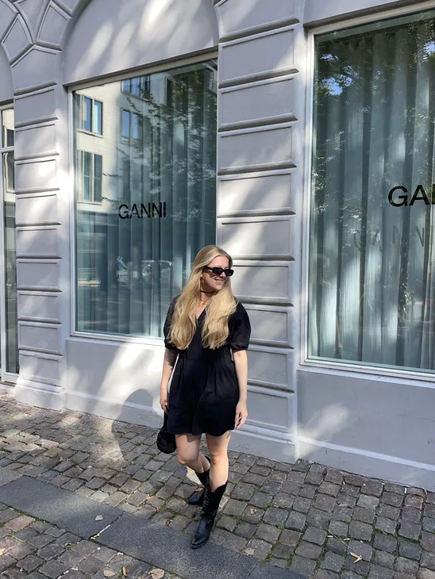

Hvem er Viola?
“Jeg er født og opvokset på solskinsøen Bornholm”, det er stort sådan jeg altid starter med at introducerer mig selv. Nogle gange spekulerer jeg på, om det kan siges anderledes. Men Bornholm er en stor del af min identitet, og jo mere jeg tænker over det, jo mere stolt bliver jeg af at sige det. Da jeg synes at der er noget helt unikt ved at være vokset op lige præcis der.
Jeg er en 22-årig imødekommende og smilende pige, der bl.a. har en stor svaghed for mode og livsstilsbranchen. Jeg elsker at se og læse romantiske bøger, film og serier, selv de mest klichéfyldte. Samtidig er jeg eventyrlysten og har blandt andet prøvet både bungee jumping og skydiving i Sydamerika!

Hvorfor lige multimediedesigner?
Siden barndommen har jeg altid været interesseret i kreative aktiviteter, hvad enten det var at tegne, hækle, lave keramik eller tage billeder. Når jeg støder på noget nyt og interessant, går der sjældent lang tid, før jeg selv prøver det af.
CV
At gå fra at sælge chokolade til tøj, for så at sælge interiør og lege med de sociale medier, til at undervise børn og sælge tøj igen. Mit cv er ikke fyldt med store flotte titler endnu. Men jeg synes derimod at det fortæller noget om nysgerrighed og lysten til at lære noget nyt.